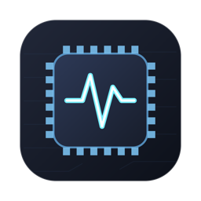
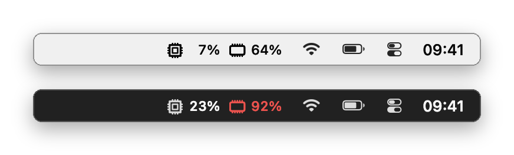
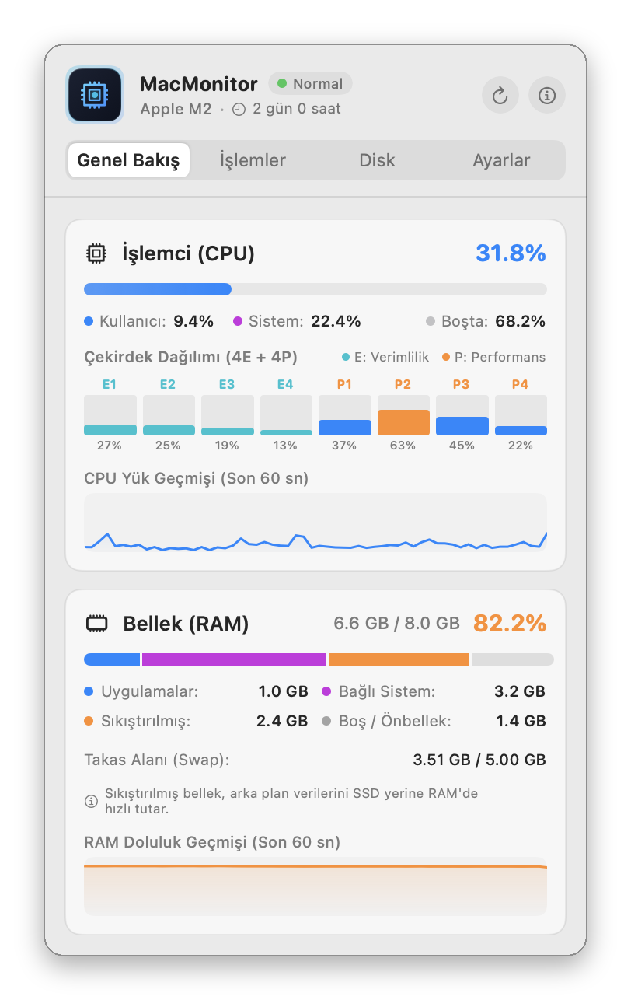
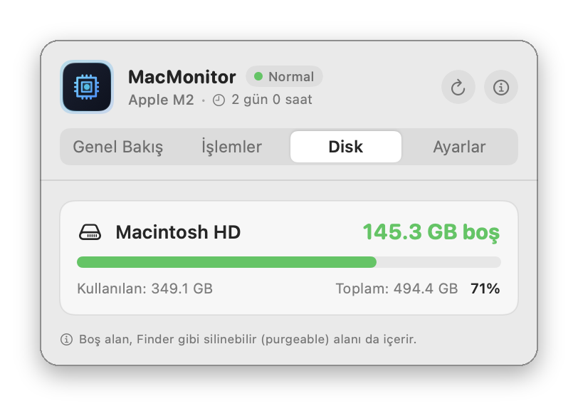
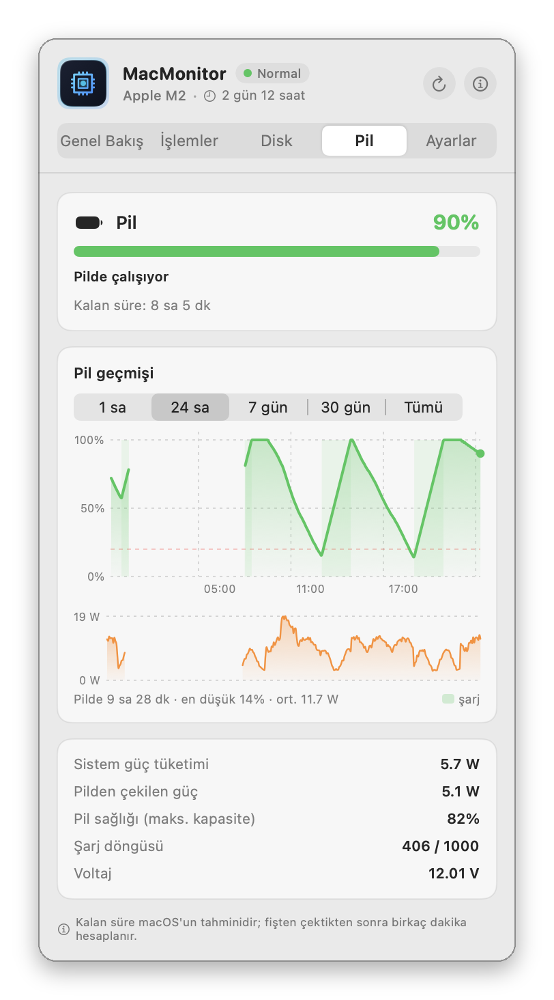

MacMonitor
Menü çubuğu CPU, RAM, disk ve pil izleyici
MacMonitor, menü çubuğunda canlı CPU ve RAM kullanımını gösteren ücretsiz ve açık kaynak bir macOS uygulamasıdır; tek tıkla çekirdek yükleri, bellek dağılımı, en çok kaynak kullanan işlemler, disk boşluğu ve uzun süreli pil geçmişi açılır.
Yalnızca CPU, bellek, disk ve pile bir bakışta göz atmak istiyorsanız iStat Menus, Stats ve MenuMeters'a hafif ve ücretsiz bir alternatif.
MacMonitor'ı macOS için indir (pkg)
Ayrıntılı belgeler · Tüm sürümler · Kaynak kod: GitLab · GitHub
Özellikler
- Menü çubuğunda canlı CPU ve RAM yüzdeleri; 0,5 ile 5 saniye arası yenileme, beş görünüm
- CPU ya da RAM uyarı eşiğini aşınca değer kırmızıya döner
- Çekirdek başına yük (verimlilik ve performans çekirdekleri) ve 60 saniyelik geçmiş grafikleri
- Etkinlik Monitörü'ndeki gibi Uygulamalar, Bağlı, Sıkıştırılmış ve Boş/Önbellek olarak bellek dağılımı ve takas alanı
- CPU'ya ya da belleğe göre en çok kaynak kullanan altı işlem
- Bağlı her diskin Finder'daki gibi hesaplanan boş, kullanılan ve toplam alanı
- Pil sekmesi: şarj, kalan süre, watt olarak güç tüketimi, pil sağlığı ve döngü sayısı
- 1 saat, 24 saat, 7 gün, 30 gün ya da 90 günlük pil geçmişi grafiği, dakikada bir kayıt; macOS yalnızca 24 saat gösterir
- Panel kapalıyken yaklaşık %0,1 CPU ve 40 MB bellek; yalnızca isteğe bağlı günlük güncelleme denetimi için bağlanır
Ekran görüntüleri




Sık sorulan sorular
MacMonitor ücretsiz mi?
Evet. MacMonitor, GPL-3.0 lisansıyla ücretsiz ve açık kaynaktır. Reklam, hesap ya da uygulama içi satın alma yoktur, hiçbir veri toplamaz; tek bağlantısı GitLab'daki günlük güncelleme denetimidir ve kapatılabilir.
Mac'te menü çubuğunda CPU ve RAM kullanımını nasıl görürüm?
MacMonitor'ı kurun: CPU ve RAM yüzdeleri hemen menü çubuğunda belirir ve 0,5 ile 5 saniye arasında yenilenir. Tıklayınca çekirdek yükleri, bellek dağılımı ve en çok CPU ya da bellek kullanan işlemler açılır.
Mac'imde ne kadar boş disk alanı kaldığını nasıl görürüm?
Menü çubuğunda MacMonitor'a tıklayıp Disk sekmesini açın. Başlangıç diskinin ve bağlı her harici diskin boş, kullanılan ve toplam alanını Finder ile aynı hesapla gösterir.
Mac'imin pil sağlığını ve şarj geçmişini nasıl görürüm?
MacMonitor'ın Pil sekmesini açın. Şarj yüzdesini, kalan süreyi, güç tüketimini, pil sağlığını (Sistem Ayarları'ndaki "Maksimum Kapasite" ile aynı) ve döngü sayısını; son 1 saat, 24 saat, 7 gün, 30 gün ya da kaydedilen tüm süre için şarj düzeyi ve sistem gücü grafiğini gösterir. macOS'un kendisi yalnızca son 24 saati gösterir.
Panel kapalıyken de pil geçmişi kaydediliyor mu?
Evet. MacMonitor çalıştığı sürece pili dakikada bir kaydeder ve 90 günü (yaklaşık 1 MB) Mac'inizde, ~/Library/Application Support/MacMonitor içinde tutar. Hiçbir yere gönderilmez. Pil sekmesi yalnızca pilli Mac'lerde görünür.
MacMonitor kendini günceller mi?
Evet, 1.3.0 sürümünden itibaren. Günde bir kez GitLab'da yeni sürüme bakar ve yenilikleri gösterir. Şimdi Güncelle'yi seçerseniz güncellemeyi indirir, SHA-256 değerini ve imzasını denetler, kendini değiştirip yeniden başlar; pil geçmişiniz korunur. Parola gerekmez. Bir sürümü atlayabilir ya da denetimi Ayarlar'dan kapatabilirsiniz.
Mac'imi yavaşlatır mı?
Hayır. Panel kapalıyken toplam CPU'nun yaklaşık %0,1'ini ve 40 MB bellek kullanır. top ya da ps gibi kabuk komutları çalıştırmadığı için sistem loguna bir şey eklemez.
iStat Menus ya da Stats'tan farkı ne?
MacMonitor bilerek daha az şey yapar: CPU, bellek, disk alanı, pil ve en çok kaynak kullanan işlemler. Sensör, ağ ya da GPU grafikleri yoktur. Yalnızca bu temel bilgileri istiyorsanız küçük ve sessiz kalır.
Hangi Mac'lerde çalışır?
macOS 13 Ventura veya üstü yüklü Apple Silicon ve Intel Mac'lerde.
macOS neden ilk seferde engelliyor?
MacMonitor, ücretli geliştirici hesabı gerektiren Apple onayından (notarization) geçmemiştir. Sistem Ayarları ▸ Gizlilik ve Güvenlik ▸ Yine de Aç ile bir kez izin verin; ayrıntılar İlk açılış bölümünde.
iStat Menus, Stats ve MenuMeters yalnızca karşılaştırma için anılmıştır; MacMonitor'ın bunlarla bir bağı yoktur.
Kurmadan önce
Uygulamalar Apple onayından (notarization) geçmedi; bunun için ücretli geliştirici hesabı gerekiyor. Bu yüzden macOS ilk açılışta engeller. Her uygulamaya Sistem Ayarları ▸ Gizlilik ve Güvenlik ▸ Yine de Aç ile bir kez izin verin. Her sürümde SHA-256 değeri yayımlanır.